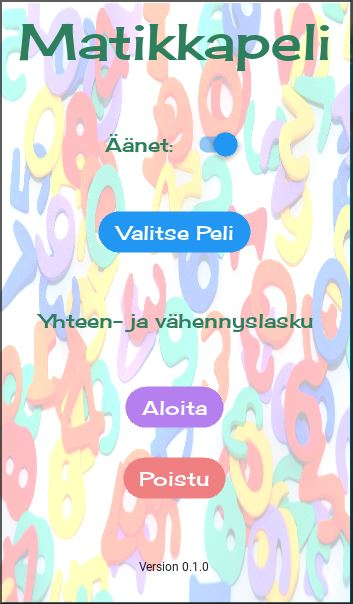
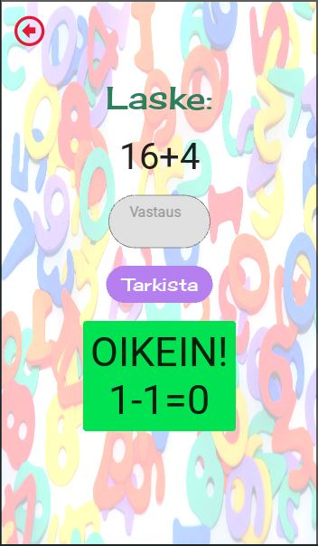
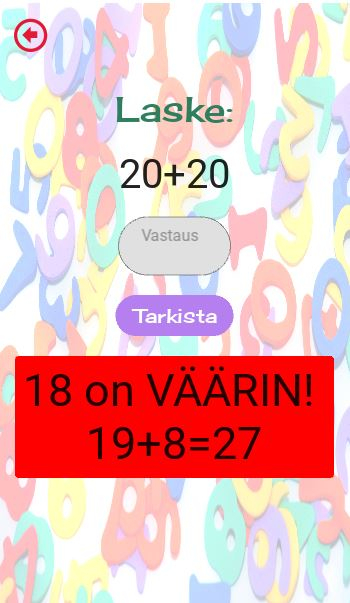
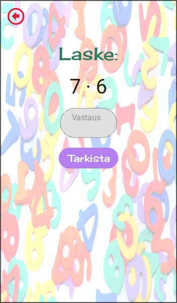

MatikkaPeli
Peli sai alkunsa kouluprojektista, jossa oli yhtenä vaihtoehtona tehdä lasten matikkapeli. Idea kuulosti hyvältä ja aloitin tekemään peliä. Projektissa peli tehtiin alun perin Tkinter frameworkillä, mutta koska lapseni tykkäsi pelata peliä tietokoneella ja Tkinter toimii vain Windows-järjestelmässä niin ajattelin, että hänen olisi mukavampi pelata peliä omalla puhelimellaan paikasta riippumatta. Tämän takia vaihdoin Frameworkin KivyMd:hen.
Aloitus sivu (Kuva suurenee klikkaamalla)
Aluksi pelissä oli vain plus ja miinus laskut rajoitettuna riippuen lapseni opiskelun etenemisestä. Esimerkiksi maksimiluku oli 20 ja negatiiviset tulokset eivät olleet mukana.
Myöhemmin peliin lisättiin myös kertolaskut ja niitä rajoitettiin sen perusteella mitä kertotauluja lapseni sillä hetkellä opiskeli. Pelissä on myös äänet, jotka kuuluvat, kun vastaus on oikein tai väärin. Äänet saa etusivulta päälle tai pois. Myöhemmässä kehityksessä on tarkoitus antaa pelin pelaajalle mahdollisuus valita mieleisensä laskut ja laskualueet.
Kun pelissä klikkaa Tarkista -painiketta, tarkastaa peli vastauksen sekä esittää uuden laskutehtävän.
Peli on jo tässä kohdassa esittänyt uuden laskutehtävän. (Kuva suurenee klikkaamalla)
Vastauksen ollessa väärin tarkistuskenttä muuttuu punaiseksi ja kertoo oikean vastauksen.
Väärin meni! (Kuva suurenee klikkaamalla)
Kertolasku (Kuva suurenee klikkaamalla)
Pelin kehittäminen oli mielenkiintoinen projekti. Ennen varsinaista koodaamista sekä koodatessa piti miettiä pelin logiikkaa ja toiminnallisuuksien toteutusta. Myös pelin frameworkin valinnan takia tuli myös opeteltua Kv -kieltä, jolla rakennetaan graafinen käyttöliittymä Kivy Frameworkissä. Kieli on nopea ja helppo omaksua, jos esimerkiksi HTML on ennestään tuttua näiden kielten samankaltaisuuden vuoksi.
Mitä tulevaisuudessa? Jatko kehitys
- Pelaaja voi itse valita laskutehtävät sekä valita rajauksen
- Asetukset valikko/sivu
- Käytettävyyden parantelu
Linkki lähdekoodiin:
Linkki lähdekoodiin
Githubissa